2023 National 5 Mathematics - Paper 1 questions
Source: Scottish Qualifications Authority (SQA) / Qualifications Scotland. This is a StemInteract HTML companion, not an official HTML edition. Selectable text is supplied alongside original page images. Use the images or original PDF for equations, powers, fractions, vector notation, tables and diagrams; text extraction cannot fully preserve mathematical layout.
Jump to a question
PDF page 1
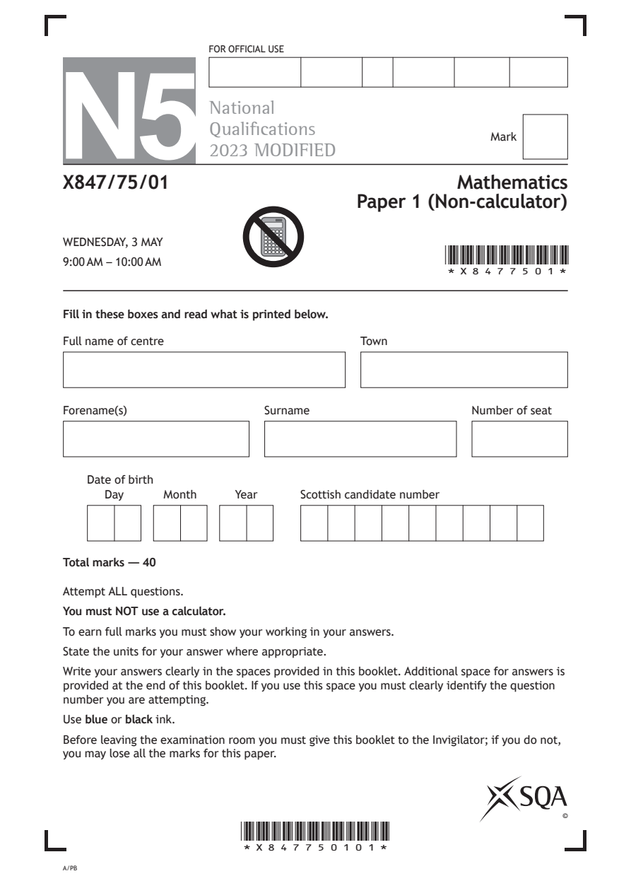
Selectable page text
FOR OFFICIAL USE
N5
National
Qualications
Mark
2023 MODIFIED
X847/75/01 Mathematics
Paper 1 (Non-calculator)
WEDNESDAY, 3 MAY
9:00 AM – 10:00 AM
*X8477501*
Fill in these boxes and read what is printed below.
Full name of centre Town
Forename(s) Surname Number of seat
Date of birth
Day Month Year Scottish candidate number
Total marks — 40
Attempt ALL questions.
You must NOT use a calculator.
To earn full marks you must show your working in your answers.
State the units for your answer where appropriate.
Write your answers clearly in the spaces provided in this booklet. Additional space for answers is
provided at the end of this booklet. If you use this space you must clearly identify the question
number you are attempting.
Use blue or black ink.
Before leaving the examination room you must give this booklet to the Invigilator; if you do not,
you may lose all the marks for this paper.
©
*X847750101*
A/PBPDF page 2
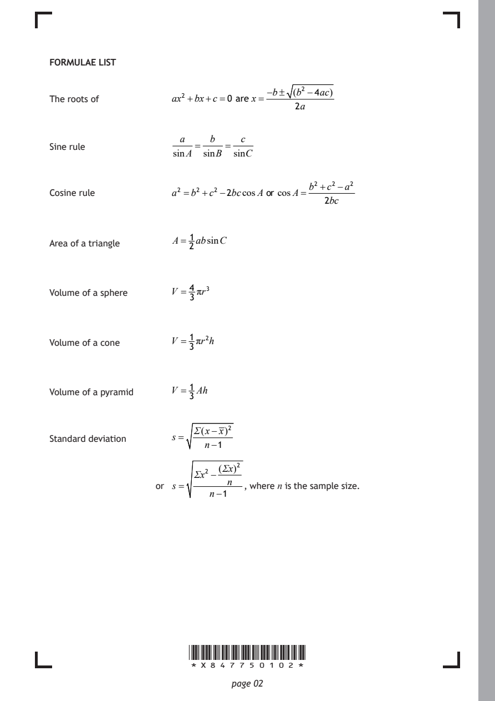
Selectable page text
FORMULAE LIST
−b± (b² −4ac)
The roots of ax² +bx+c=0 are x=
2a
a b c
Sine rule = =
sinA sinB sinC
b² +c²−a²
Cosine rule a² =b²+c² −2bccosA or cosA=
2bc
1
A= absinC
Area of a triangle
2
4
Volume of a sphere V = πr³
3
1
Volume of a cone V = πr²h
3
1
Volume of a pyramid V = Ah
3
Σ(x−x)²
Standard deviation s =
n−1
(Σx)²
Σx² −
n
or s = , where n is the sample size.
n−1
*X847750102*
page 02PDF page 3
Paper 1, Question 1Paper 1, Question 2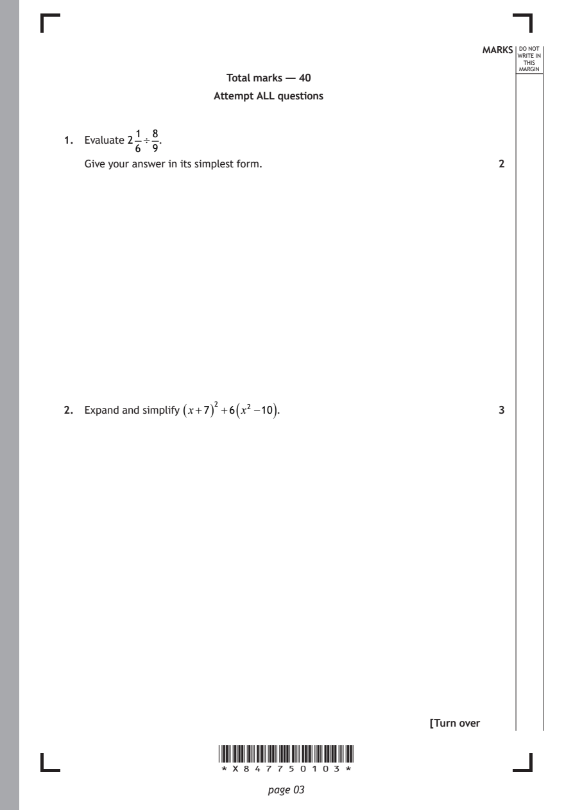
Selectable page text
MARKS _{W}^{D}_{R}^{O}_{I} _{T}^{N}OT
E IN
THIS
MARGIN
Total marks — 40
Attempt ALL questions
1 8
1. Evaluate 2 ÷ .
6 9
Give your answer in its simplest form. 2
2. Expand and simplify ( x+7 ) ² +6 ( x² −10 ) . 3
[Turn over
*X847750103*
page 03PDF page 4
Paper 1, Question 3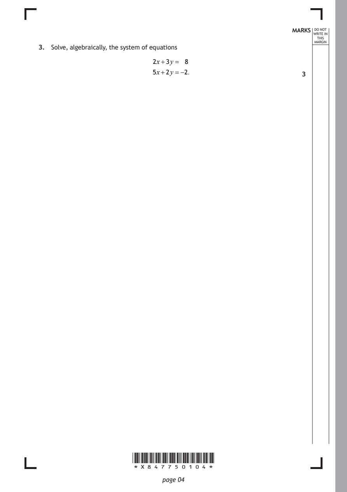
Selectable page text
MARKS _{W}^{D}_{R}^{O}_{I} _{T}^{N}OT
E IN
THIS
MARGIN
3. Solve, algebraically, the system of equations
2x+3y = 8
5x+2y =−2.
3
*X847750104*
page 04PDF page 5
Paper 1, Question 4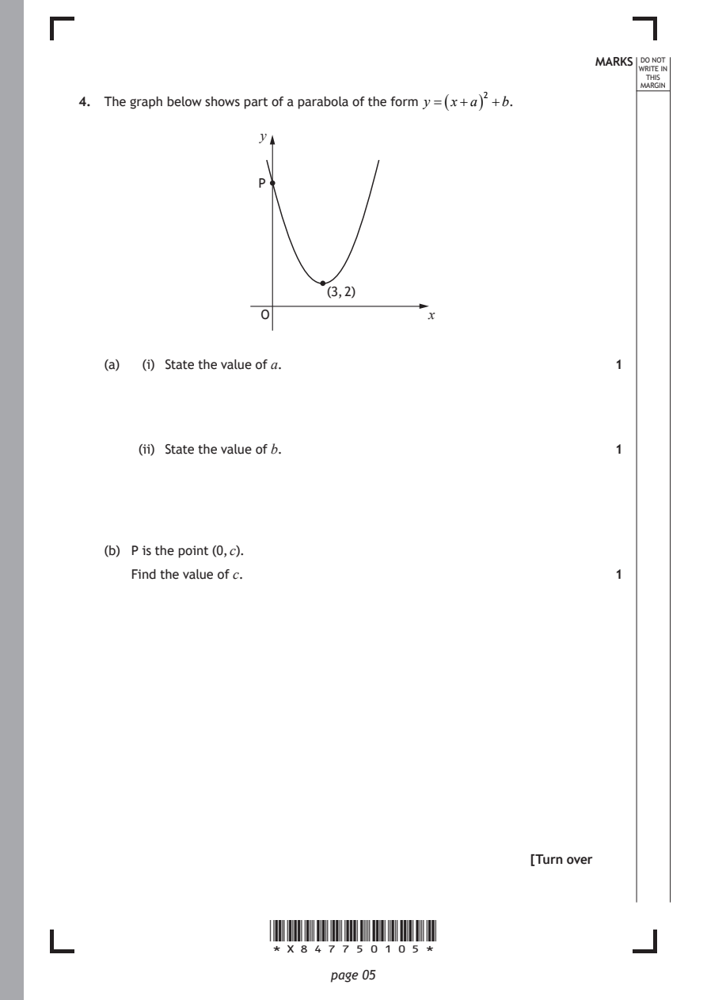
Selectable page text
MARKS _{W}^{D}_{R}^{O}_{I} _{T}^{N}OT
E IN
THIS
MARGIN
4. The graph below shows part of a parabola of the form y =( x+a ) ² +b.
y
P
(3, 2)
O x
(a) (i) State the value of a. 1
(ii) State the value of b. 1
(b) P is the point (0, c).
Find the value of c. 1
[Turn over
*X847750105*
page 05PDF page 6
Paper 1, Question 5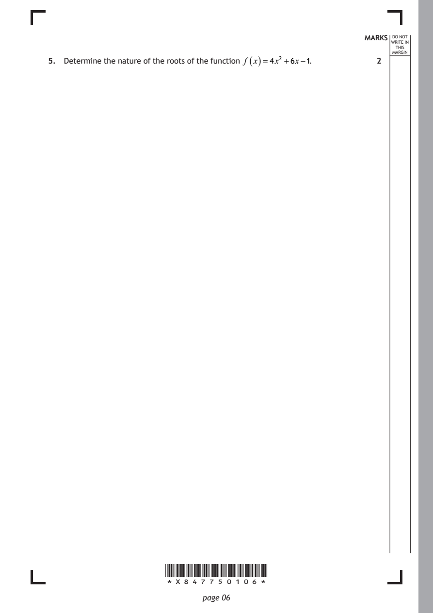
Selectable page text
MARKS _{W}^{D}_{R}^{O}_{I} _{T}^{N}OT
E IN
THIS
ARGIN
5. Determine the nature of the roots of the function f ( x )=4x² +6x−1. 2 ^{M}
*X847750106*
page 06PDF page 7
Paper 1, Question 6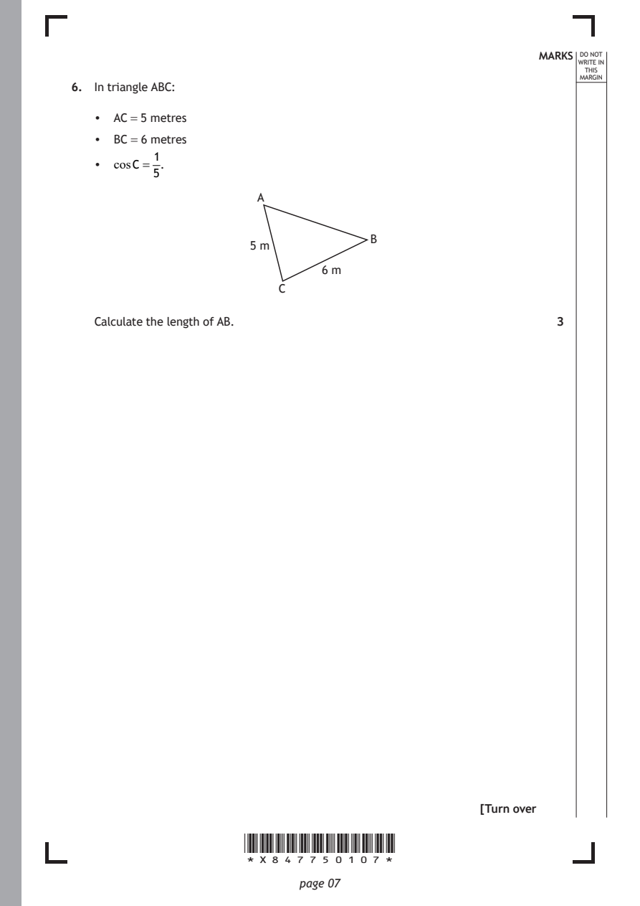
Selectable page text
MARKS _{W}^{D}_{R}^{O}_{I} _{T}^{N}OT
E IN
THIS
MARGIN
6. In triangle ABC:
• AC = 5 metres
• BC = 6 metres
1
• cosC = .
5
A
B
5 m
6 m
C
Calculate the length of AB. 3
[Turn over
*X847750107*
page 07PDF page 8
Paper 1, Question 7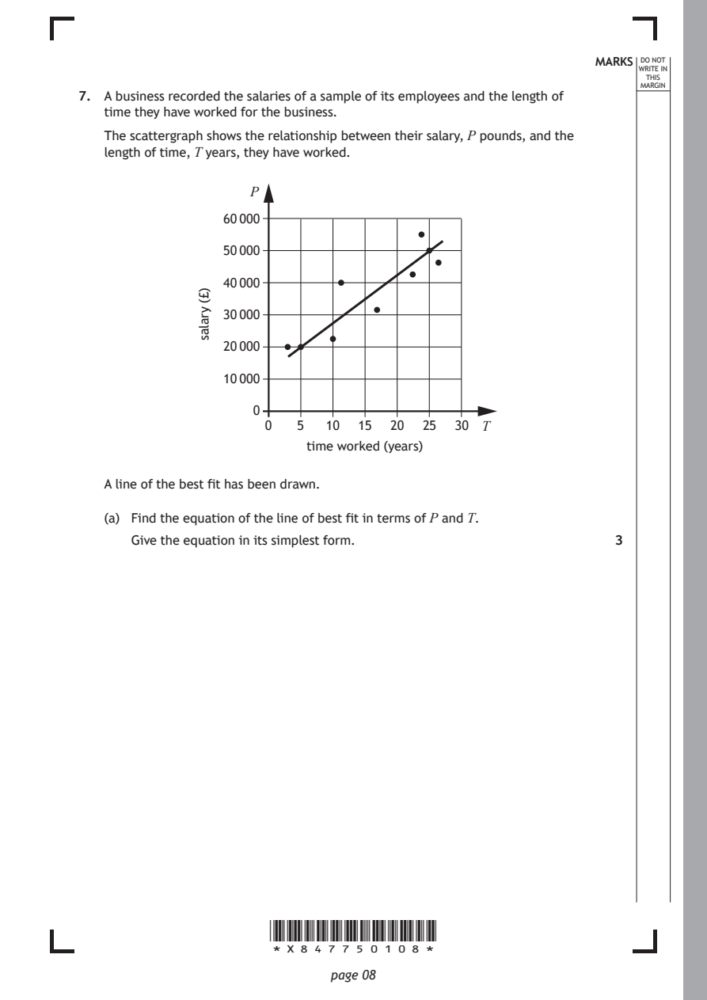
Selectable page text
MARKS _{W}^{D}_{R}^{O}_{I} _{T}^{N}OT
E IN
THIS
MARGIN
7. A business recorded the salaries of a sample of its employees and the length of
time they have worked for the business.
The scattergraph shows the relationship between their salary, P pounds, and the
length of time, T years, they have worked.
*X847750108*
page 08
)£(
yralas
P
60 000
50 000
40 000
30 000
20 000
10 000
0
0 5 10 15 20 25 30 T
time worked (years)
A line of the best fit has been drawn.
(a) Find the equation of the line of best fit in terms of P and T.
Give the equation in its simplest form. 3PDF page 9
Paper 1, Question 8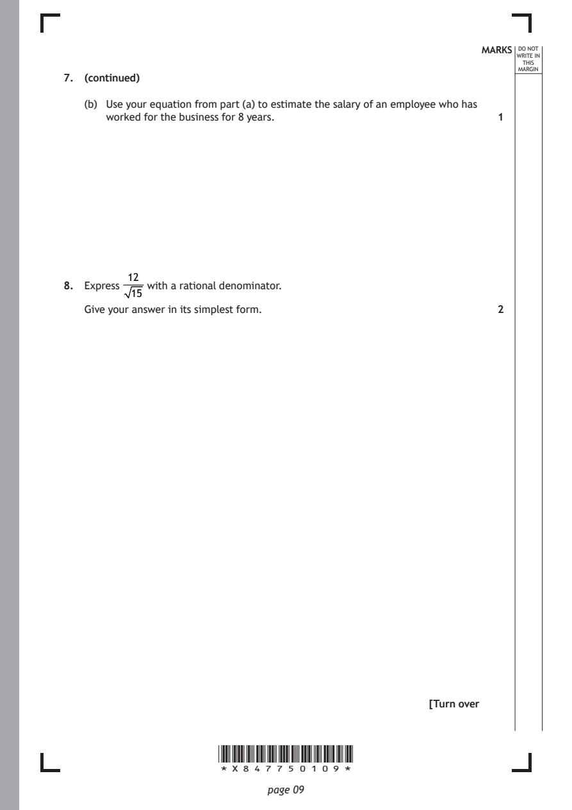
Selectable page text
MARKS _{W}^{D}_{R}^{O}_{I} _{T}^{N}OT
E IN
THIS
MARGIN
7. (continued)
(b) Use your equation from part (a) to estimate the salary of an employee who has
worked for the business for 8 years. 1
12
8. Express with a rational denominator.
15
Give your answer in its simplest form. 2
[Turn over
*X847750109*
page 09PDF page 10
Paper 1, Question 9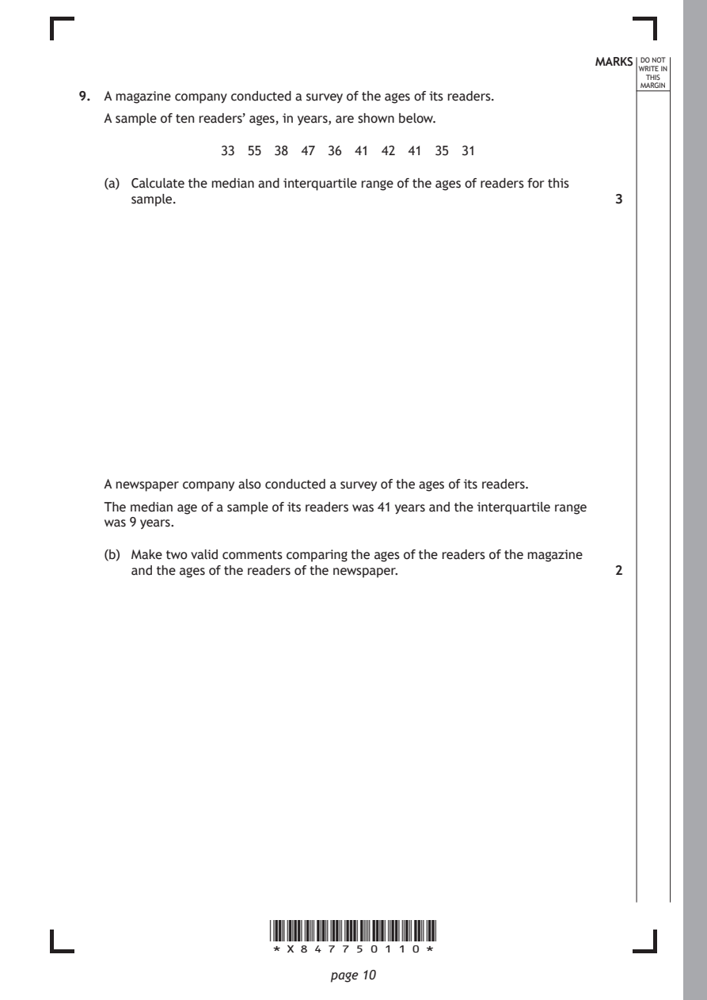
Selectable page text
MARKS _{W}^{D}_{R}^{O}_{I} _{T}^{N}OT
E IN
THIS
MARGIN
9. A magazine company conducted a survey of the ages of its readers.
A sample of ten readers’ ages, in years, are shown below.
33 55 38 47 36 41 42 41 35 31
(a) Calculate the median and interquartile range of the ages of readers for this
sample. 3
A newspaper company also conducted a survey of the ages of its readers.
The median age of a sample of its readers was 41 years and the interquartile range
was 9 years.
(b) Make two valid comments comparing the ages of the readers of the magazine
and the ages of the readers of the newspaper. 2
*X847750110*
page 10PDF page 11
Paper 1, Question 10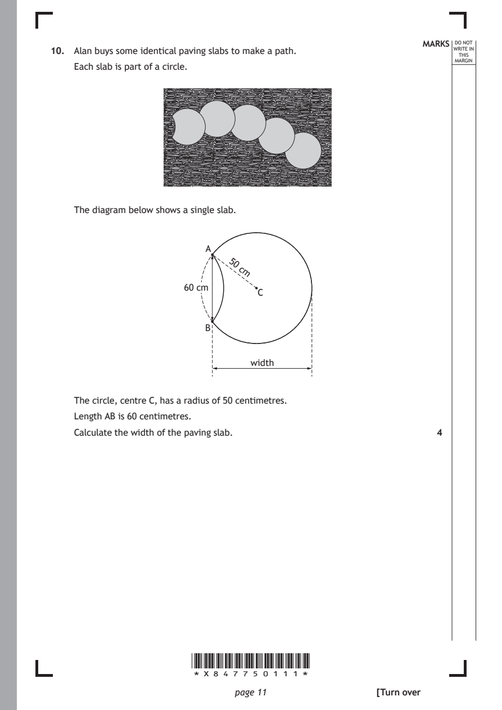
Selectable page text
MARKS _{W}^{D}_{R}^{O}_{I} _{T}^{N}OT
10. Alan buys some identical paving slabs to make a path. E IN
THIS
MARGIN
Each slab is part of a circle.
The diagram below shows a single slab.
A
5
0
c
m
60 cm
C
B
width
The circle, centre C, has a radius of 50 centimetres.
Length AB is 60 centimetres.
Calculate the width of the paving slab. 4
*X847750111*
page 11 [Turn overPDF page 12
Paper 1, Question 11Paper 1, Question 12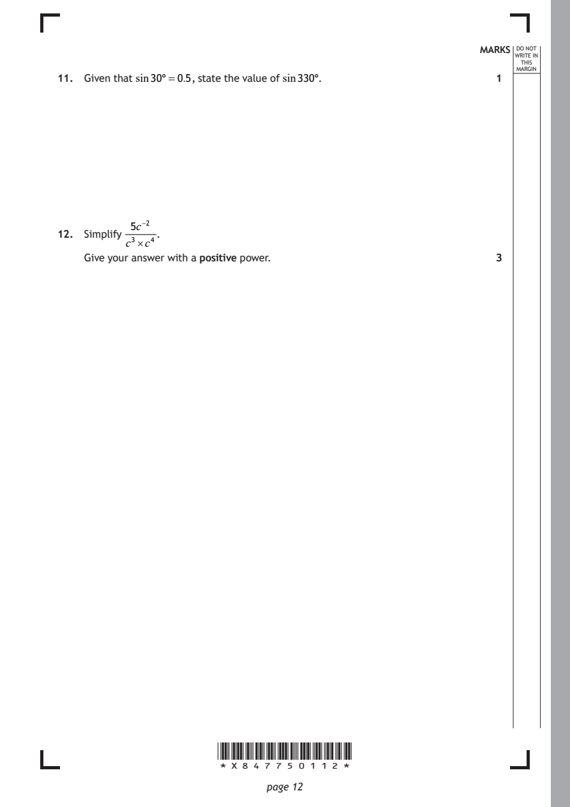
Selectable page text
MARKS _{W}^{D}_{R}^{O}_{I} _{T}^{N}OT
E IN
THIS
ARGIN
11. Given that sin30°=0.5, state the value of sin330°. 1 ^{M}
5c⁻²
12. Simplify .
c³×c⁴
Give your answer with a positive power. 3
*X847750112*
page 12PDF page 13
Paper 1, Question 13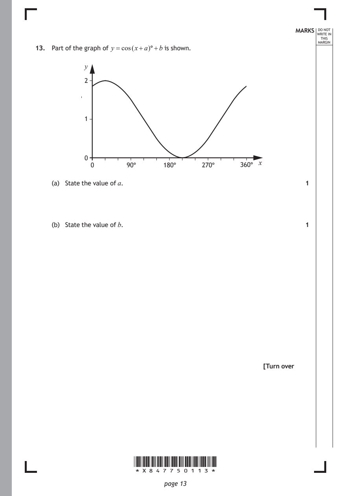
Selectable page text
MARKS _{W}^{D}_{R}^{O}_{I} _{T}^{N}OT
E IN
THIS
MARGIN
13. Part of the graph of y =cos(x+a)°+b is shown.
y
2
1
0
x
0 90° 180° 270° 360°
(a) State the value of a. 1
(b) State the value of b. 1
[Turn over
*X847750113*
page 13PDF page 14
Paper 1, Question 14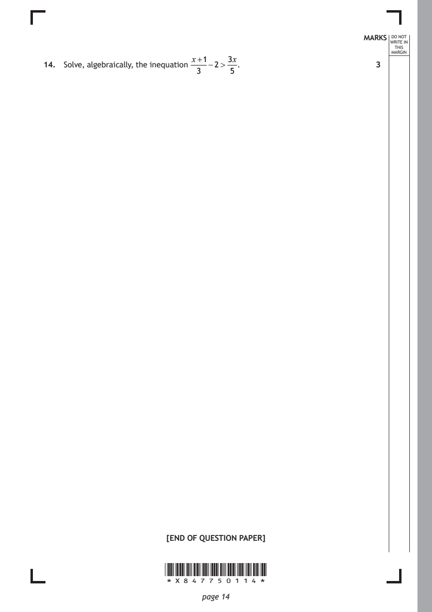
Selectable page text
MARKS _{W}^{D}_{R}^{O}_{I} _{T}^{N}OT
E IN
THIS
MARGIN
x+1 3x
14. Solve, algebraically, the inequation −2> . 3
3 5
[END OF QUESTION PAPER]
*X847750114*
page 14PDF page 15
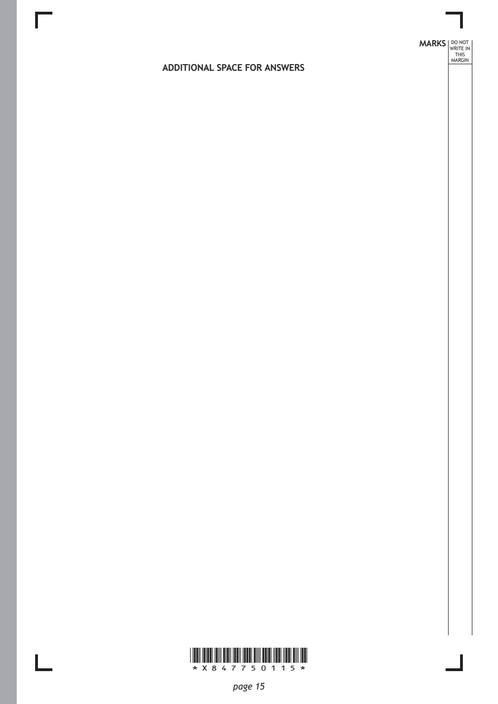
Selectable page text
MARKS _{W}^{D}_{R}^{O}_{I} _{T}^{N}OT
E IN
THIS
MARGIN
ADDITIONAL SPACE FOR ANSWERS
*X847750115*
page 15PDF page 16
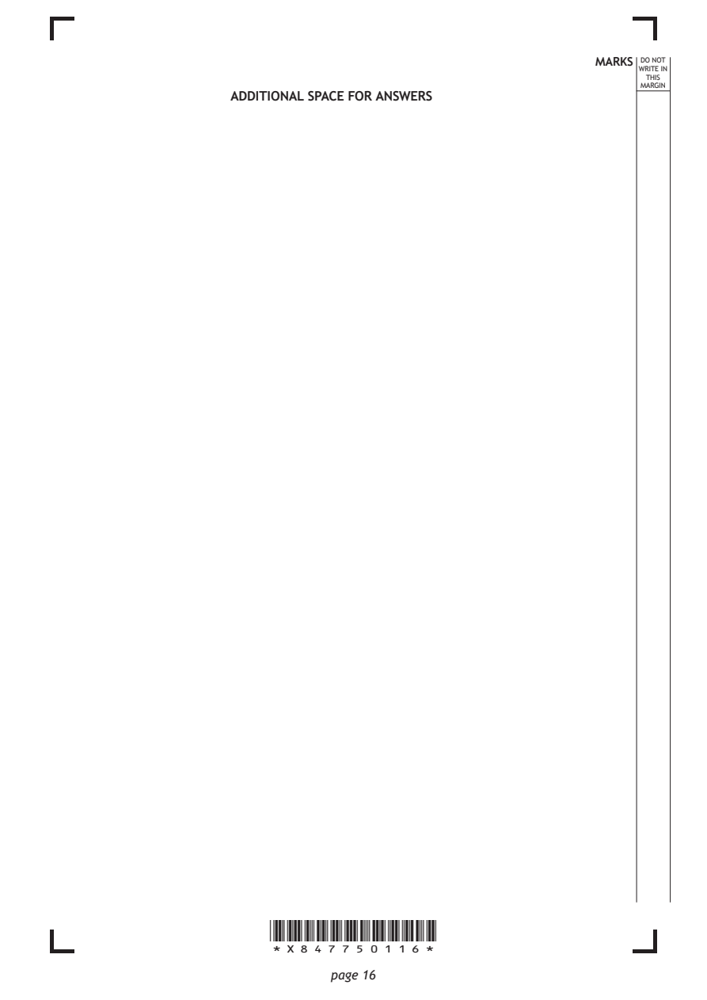
Selectable page text
MARKS _{W}^{D}_{R}^{O}_{I} _{T}^{N}OT
E IN
THIS
MARGIN
ADDITIONAL SPACE FOR ANSWERS
*X847750116*
page 16